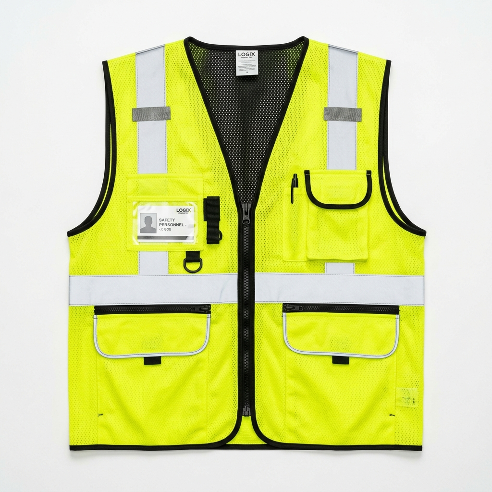
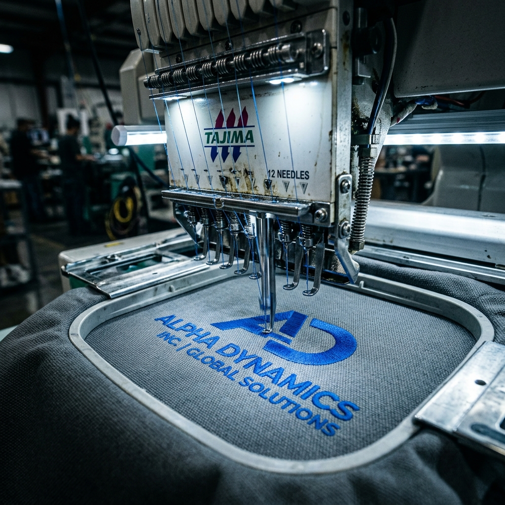
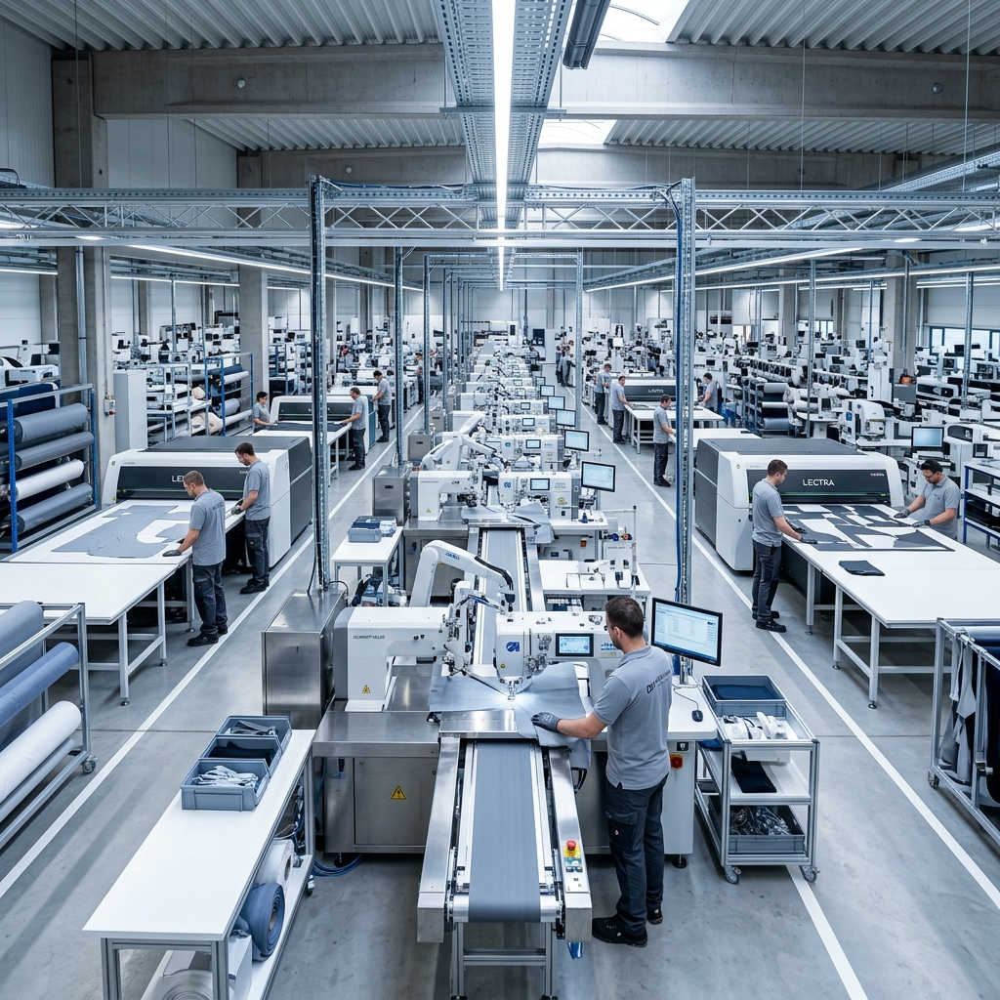
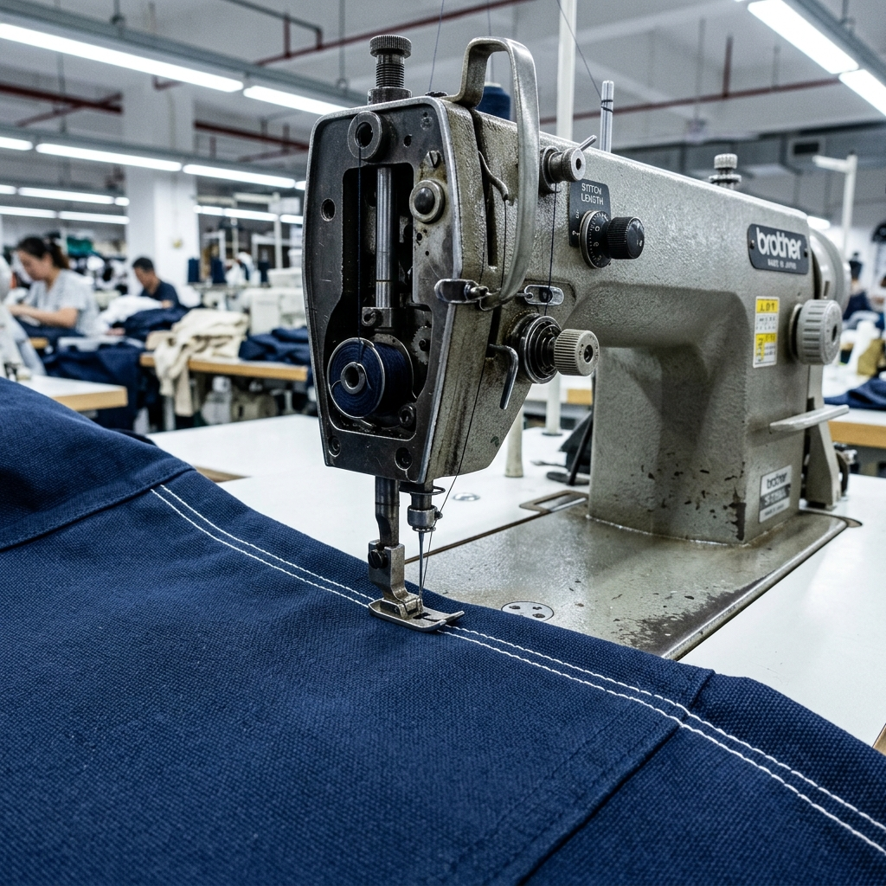

Equipamiento de alto rendimiento.
Nuestra línea de productos está diseñada bajo estrictos estándares industriales para garantizar durabilidad, seguridad y presentación profesional en cualquier entorno operativo.
Nuestros Chalecos Reflejantes
Alta visibilidad, resistencia y comodidad para entornos operativos exigentes.

Chaleco de gabardina ligera y resistente, cómodo para uso prolongado. Cuenta con 6 cintas reflejantes, múltiples bolsillos funcionales, costuras reforzadas en puntos estratégicos y cierre reforzado para mayor practicidad y seguridad.
COTIZAR arrow_forwardChaleco reflejante de gabardina ligera y resistente, cómodo y durable para uso laboral. Cuenta con 8 bandas reflejantes, 2 bolsillos frontales, cierre reforzado y cubre cuello para mayor seguridad y comodidad.
COTIZAR arrow_forwardChaleco de gabardina ligera y cómoda con 5 cintas reflejantes de alta visibilidad. Incluye múltiples bolsillos funcionales, porta radio, porta lámpara, bolsa trasera para documentos, ajuste lateral y cierre reforzado para mayor comodidad y seguridad.
COTIZAR arrow_forwardChaleco de seguridad reflejante, ligero y cómodo, ideal para construcción, brigadistas y personal técnico. Cuenta con 6 bandas reflejantes visibles hasta 300 m, múltiples bolsillos funcionales, malla transpirable y cierre reforzado para mayor comodidad y seguridad.
COTIZAR arrow_forwardNuestros Uniformes
Seleccione una categoría para explorar especificaciones técnicas.

Chalecos
Seguridad y visibilidad normativa.

Overoles

Camisas industriales

Pantalones industriales
Uniformes personalizados
Integramos la identidad corporativa de su empresa directamente en la manufactura del equipamiento mediante técnicas de alta precisión.

Galería de Bordados
Uniformes personalizados con bordados industriales de alta precisión.


